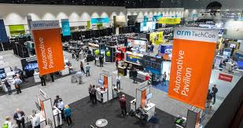

Our History
Founded in 2010 by a group of Silicon Valley innovators, TechCon began as a small gathering of 200 technology enthusiasts. Over the past 14 years, we've grown into one of the world's premier tech conferences, hosting over 15,000 attendees annually at our flagship event in San Francisco.
Each year builds on our legacy of bringing together the brightest minds in technology to share knowledge and inspire the next generation of innovators.